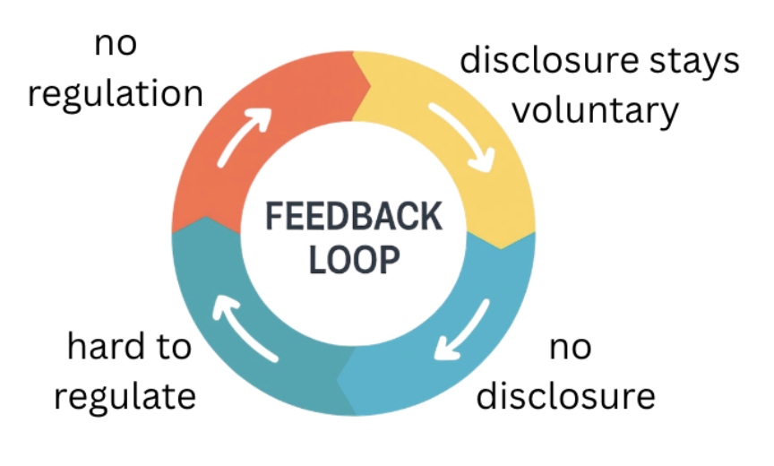

The Loop - And How to Break It

The measurement gap, the transparency failures, and the regulatory inadequacy aren't three separate problems - they form a feedback loop. No disclosure makes regulation hard. No regulation keeps disclosure voluntary, and AI companies designed the conditions that keep it that way.
The most underfunded piece of this puzzle right now is water. Carbon has gotten most of the academic and regulatory attention, but water is scarcer, more locally consequential, and even less studied. De Vries-Gao (2025) offers the most comprehensive analysis available, but even his work is limited by the same disclosure gaps he's critiquing.
The goal of this blog isn't to make you feel bad for using AI - it's to make the case that the conversation about responsibility needs to shift. Users can't make environmentally conscious choices when the costs are hidden.